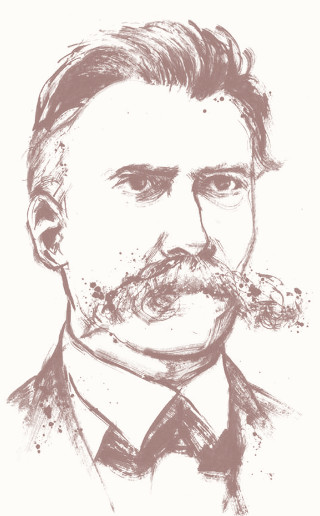
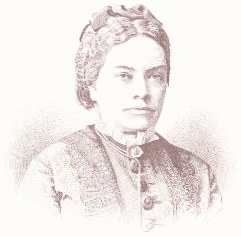
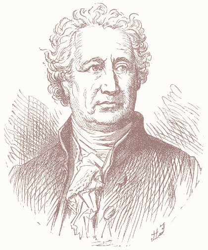
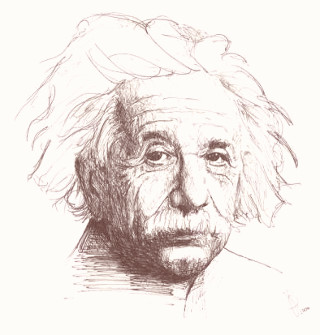
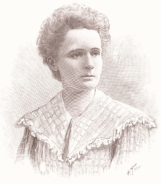
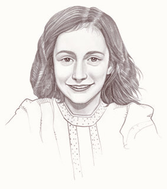
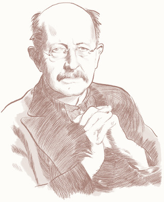
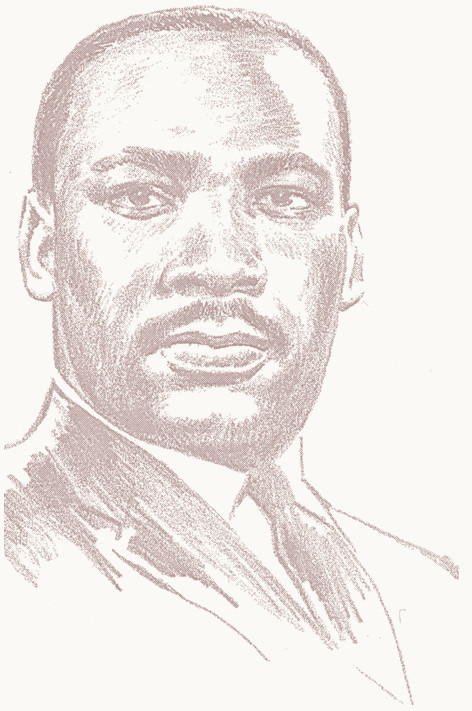
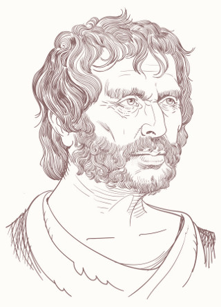
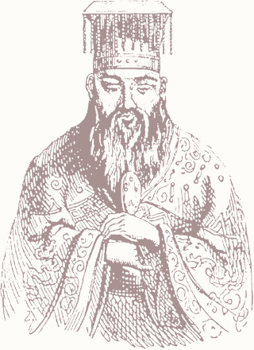

Vorwort: Warum Worte
Was hättest Du zu sagen, wenn Du der Nachwelt ein paar Sätze hinterlassen würdest? Oder wurde vielleicht bereits alles gesagt? Durch das Internet haben wir zwar Zugang zum gesamten Wissensspektrum der Menschheit, doch ich habe das Gefühl, dass es schwieriger geworden ist, das Wesentliche in diesem digitalen Wimmelbild zu erkennen.
Die Welt in ihrer Komplexität vollständig zu beschreiben ist unmöglich, denn wir können uns Sachverhalten wie wir sie beobachten, sprachlich immer nur annähern. Doch Sprache ist die Quelle unserer Gedanken und verbindet uns mit anderen Menschen – selbst zwischen verschiedenen Kulturkreisen und über die Zeit von Generationen hinweg.Sei nicht faul, selbst wenn du Geld hast.
Ἀργὸς μὴ ἴσθι, μηδ᾿ ἂν πλουτῇς
Thales von Milet., Quoted by Demetrios, ≈ 600 v. Chr.
Dieses Zitat ist über 2000 Jahre alt aber noch lange nicht veraltet. So können bereits wenige Worte, die mit dem richtigen Sprachgefühl geschliffen wurden, einen Gedanken mit vielen seiner Facetten einfangen und konservieren. Auch wenn z.B. die Aussage „Die Erde ist eine Kugel“ mehrdeutig, unpräzise und unvollständig ist, so vermittelt sie für ihre Wortanzahl erstaunlich viel Erkenntnis.
Es ist die Essenz hinter solchen Sätzen, die mich fasziniert und darum möchte ich für Dich (oder mein zukünftiges Ich), die für mich imponierendsten Gedanken festhalten. Die Zutaten sind eine bunte Mischung, die ich aus Büchern, nächtlichen Diskussionen mit geistreichen Menschen, TED-Talks und meiner persönliche Erfahrung gewonnen habe. Gewürzt mit Verständlichkeit, Subjektivität und Kürze, besteht jedes Destillat aus einer Idee und ein oder mehreren Lehren die ich daraus ziehe. Jetzt, wo Du schon mal hier bist, lade ich Dich ein, meinen neuronalen Fußspuren weiter zu folgen. Bereit?
Prologosophie: Was bisher geschah
In der Geschichte der Menschheit wurde bereits viel gedacht und gesagt. Für den Fall, dass Du die letzten zweitausend Jahre nicht anwesend warst, versuche ich Dir hier einen mikroskopischen Crashkurs zu geben, quer durch die abendländische Philosophie auf einer Seite. Los geht’s.
Etwa 400 v. Chr. in Athen wusste Sokrates, dass er nichts sicher wissen kann und stellte deshalb viele nervige Fragen. Daraufhin wurde er kurzerhand – dennoch demokratisch – hingerichtet. Sein Schüler Platon trieb deswegen mit Fleiß die Philosophie voran und erklärte mit dem Höhlengleichnis, dass wir Dinge nur als schattenhafte Idee, aber nie an sich erkennen können. Die höchste Idee sei dabei das Schöne und Gute. Platons Schüler Aristoteles dachte stattdessen, die Wahrheit ist konkret erfahrbar und mit Logik erklärbar. In über 400.000 Zeilen Lebenswerk, welches ihn zum Universalgelehrten kürte, kategorisierte er die gesamte menschlichen Erfahrungen in Sachgebiete und analysierte jedes systematisch. Sein ambitioniertes Ziel war die Glückseligkeit für alle, die durch tugendhaftes Handeln erreicht werden kann.
Dann kam das Mittelalter und Gott war die Antwort auf alles, bis Descartes alles anzweifelte was mit Vernunft und Mathematik nicht erklärbar sei. Und so war jede Existenz zweifelhaft, außer seiner Eigenen: „Ich denke, also bin ich“.
Kant kritisierte (prüfte) diese reine Vernunft und fragte nach den Bedingungen der Möglichkeit von Erkenntnis. Für ihn war der Verstand das zentrale Element der Erkenntnis (nicht die Dinge), denn wir erkennen mit unseren Sinnen nur verzerrte Erscheinungen von Dingen und erst unser Verstand konstruiert daraus Begriffe und Tatsachen [1]. „Ohne Sinnlichkeit würde uns kein Gegenstand gegeben, und ohne Verstand keiner gedacht werden.“ Der Verstand selbst existiert nur in dieser konstruierten Welt und so können seine Begriffe eine Frage nach dem Außerhalb nicht beantworten. Für Kant war die aufgeklärtere Frage: „Was ist der Mensch?“
Für Schopenhauer war der Mensch ein (mit)leidender Zweifüßler, für Kierkegaard die freie Existenz, für Marx ein entfremdeter Konsument und für Heidegger das vergessene Dasein. Nietzsche sah einen unterdrückten Übermensch am Abgrund. „Gott ist tot“, lautete sein Befund und die „Umwertung aller Werte“ seine Forderung. „Tractatus!“, sprach Wittgenstein, die Philosophie muss zuerst die Sprache analysieren, die wir zum denken und erkennen verwenden, bevor wir überhaupt etwas sagen können [2].
Was lässt sich also überhaupt sagen? Für Satre lässt sich sagen: Wir sind „dazu verurteilt, frei zu sein.“ [3] Wir wurden unfreiwillig in diese Welt geworfen, ohne eine andere Gewissheit als unsere Existenz. Doch damit haben wir die Freiheit uns komplett selbst zu definieren und das Privileg für unsere Entscheidungen verantwortlich zu sein. Jetzt gilt es, das Beste daraus zu machen.

In irgendeinem abgelegenen Winkel des in zahllosen Sonnensystemen flimmernd ausgegossenen Weltalls gab es einmal ein Gestirn, auf dem kluge Tiere das Erkennen erfanden. Es war die hochmütigste und verlogenste Minute der »Weltgeschichte«: aber doch nur eine Minute. Nach wenigen Atemzügen der Natur erstarrte das Gestirn, und die klugen Tiere mussten sterben.
Friedrich Nietzsche, Über Wahrheit und Lüge im außermoralischen Sinne, 1873
Linguversum: Realität ist ein unscharfes Sprachkonstrukt
Unser Verständnis der Welt basiert auf sprachlichen Gedanken, welche wir mit Begriffen formulieren. Begriffe an sich sind jedoch inhaltsleer und erst durch die Verknüpfung mit unseren subjektiven Wahrnehmungen erschaffen wir Bedeutung. Andersherum, können wir durch Sprache die Bedeutung unserer Wahrnehmung ändern und somit existiert der Unterschied zwischen Krach und Klang, zwischen dem was wir hässlich oder schön nennen, nur in unserem Kopf.
Lehre:
Mit Definitionsgewalt und Wortwahl bewaffnet, kannst Du überall dein eigenes Königreich erschaffen. Dort gelten zwar die gleichen physikalischen Gesetze, aber die Bedeutung von Ereignissen für Dich ist nur durch deine Phantasie begrenzt. Es liegt also an Dir, ob Du Richtung Jammertal hinabsteigst und deine Sorgen über Zufallsschläge verstärkst, oder ob Du beschließt, dass Elefanten – selbst wenn sie mehr Platz einnehmen – auch nur lästige Fliegen sind.

Nicht, was wir erleben, sondern wie wir empfinden, was wir erleben, macht unser Schicksal aus.
Marie von Ebner-Eschenbach, Erzählungen, 1875
Lehre:
Menschen haben unterschiedliche Vorstellungen über die Welt und es gibt kein objektives falsch oder richtig. Kommunikation ist deshalb schwierig und zwischenmenschliche Probleme entstehen meistens dadurch, dass man unterschiedliche Weltanschauungen besitzt ohne es zu wissen. Frage deshalb aktiv nach und gehe nicht stumm davon aus, dass deine Mitmenschen genau so denken wie Du oder die gleichen Werte vertreten. Akzeptiere andere Gedanken aber wenn Du unzufrieden bist, dann lass niemanden die Gründe dafür erraten sondern sprich sie freundlich und direkt an.
Gedacht heißt nicht immer gesagt – gesagt heißt nicht immer richtig gehört – gehört heißt nicht immer richtig verstanden – verstanden heißt nicht immer einverstanden – einverstanden heißt nicht immer angewendet – angewendet heißt noch lange nicht beibehalten.
Konrad Lorenz, (zugeschrieben), ∗1903 – ✝1989
Gruppenglaube: Menschen erzählen sich Märchen
Eine konsistente Geschichte innerhalb deines Linguversums ist also für das eigene Selbstbild und Psyche oft gesünder und hilfreicher als eine von Außenstehenden definierte Tatsache. Für gesellschaftliches Zusammenleben ist es ebenfalls oft nützlicher zu verstehen, auf welcher Wertevorstellung und Glaubensgrundlage Mitmenschen ihre Entscheidungen fällen, anstatt die Frage nach der Wahrheit oder dem Recht für sich zu beantworten. Anstatt am Lagerfeuer, sitzen wir heute zusammen am Glasfaserkabel aber was wir uns erzählen hat sich in den letzten tausend Jahren kaum verändert. Und so sticken die Nähmaschinen der Massenmedien ein sich wiederholendes Muster in unsere Köpfe: faszinierende Geschichten für ein Zugehörigkeitsgefühl.

Nichts ist widerwärtiger als die Majorität: denn sie besteht aus wenigen kräftigen Vorgängern, aus Schelmen, die sich akkommodieren, aus Schwachen, die sich assimilieren, und der Masse, die nachtrollt, ohne nur im mindesten zu wissen was sie will.
Johann Wolfgang von Goethe, Maximen und Reflexionen, 1833
Lehre:
Mache Dir bewusst, dass Du in einem Märchen lebst. Was Du glaubst zu wissen, ist maßgeblich von deinem sozialen Umfeld mitbestimmt. Was Du siehst und hörst ist nur ein Ausschnitt: Vorgefiltert und in tausendfachen Echos widerhallend. Du kannst nicht wissen, wie viel Du nicht weißt, aber gehe davon aus, dass es eine enorme Menge ist. Hinterfrage kritisch deine eigene Meinung und finde heraus auf welcher Grundlage sie sich stützt. Bist du wirklich von etwas überzeugt oder nur weil Du es (unterbewusst) oft genug gehört hast [4]? Andersherum, ist die Meinung eines Anderen wirklich so schlecht oder lehnst Du sie deswegen ab, weil sie dir befremdlich vorkommt?

Wenige sind imstande, von den Vorurteilen der Umgebung abweichende Meinungen gelassen auszusprechen; die Meisten sind sogar unfähig, überhaupt zu solchen Meinungen zu gelangen.
Albert Einstein, Neun Aphorismen, 1954
Lehre:
Auch Du erzählst Märchen. Information zu teilen kostet Dich meist nur einen Klick, doch Deine Zuhörer und Leser bezahlen unwiderruflich mit ihrer Aufmerksamkeit. Prüfe deshalb sorgfältig, ob das was du zu sagen hast wahr, nützlich, schön oder witzig ist, denn mit jeder Weitergabe gibst Du eine Stimme ab, welche Geschichten erzählt werden und welche verstummen.
There is always a well-known solution to every human problem — neat, plausible, and wrong.
Henry Louis Mencken, Prejudices, 1920
Egozentrum: Jeder ist sein Hauptdarsteller
Du erlebst die Welt nur aus deiner Perspektive und bist somit der Hauptdarsteller deines eigenen Theaters. Allerdings musst Du Dir die Bühne mit anderen teilen und diese spielen ihr eigenes Stück. Darin haben sie die Hauptrolle und als Held ist man nun mal schnell genervt wenn einem unwichtige Nebendarsteller dazwischen funken. Leute wie Du. Global betrachtet ist es deshalb nur nachvollziehbar, dass immer die anderen Autofahrer Schuld sind.
Und wohin ich auch steige, überall folgt mir mein Hund, der heißt „Ich“.
Friedrich Nietzsche, Nachgelassene Fragmente, 1882
Lehre:
Sei tolerant zu anderen und kritisch zu Dir selbst [5]. Erkenne die Komplexität der gesellschaftlichen Mechanik, in der das Individuum nur ein Zahnrad im Getriebe seiner Beziehungen ist. Arbeite mit Anfängergeist zuerst an Dir selbst und lebe als Vorbild innerhalb deines Bewegungsrahmens, bevor Du andere für Fehler kritisierst, die Dir in ihrer Situation auch anhaften würden. Ansonsten bist Du lediglich ein weiterer, ignoranter Trampel im zerbrechlichen Porzelanleben anderer Menschen.

You cannot hope to build a better world without improving the individuals. To that end each of us must work for his own improvement, and at the same time share a general responsibility for all humanity, our particular duty being to aid those to whom we think we can be most useful.
Marie Curie., Pierre Curie, 1923
Lehre:
„Heirate Dich selbst“[6], denn niemand kennt Dich besser als Du. Vorausgesetzt Du hast Dich regelmäßig und ausgiebig mit Dir befasst. Falls nicht, lauf am besten gleich mal in den Keller deiner Persönlichkeit und schau nach, welche Charaktereigenschaften und Träume dort verstauben. Es lohnt sich, schließlich wirst Du noch eine ganze Weile mit Dir verbringen. Außerdem bist Du – genügend Selbstliebe vorausgesetzt – die einzige Person, die dich sicher niemals verlassen wird.
Knüpfe so viele Beziehungen wie Dir gut tun, doch „was auch immer du in anderen suchst, wenn es nicht in dir ist, wirst du es nicht finden“[6]. Gefährten können Dich auf deinem Lebensweg nur begleiten; gehen musst Du ihn alleine.

Ehrlich gesagt, kann ich mir nicht richtig vorstellen, wie jemand sagen kann »Ich bin schwach« und dann noch schwach bleibt. Wenn man so etwas doch schon weiß, warum [wird] dann nicht dagegen angegangen, warum deinen Charakter nicht trainieren? Die Antwort war: »Weil es so viel bequemer ist!«
Anne Frank, Tagebucheintrag, 1944
Aufmerksamkeit: Die Währung der Lebenszeit
Sobald Du morgens aufstehst, hast Du etwa 100 mal 10 Minuten auf deinem Tageskonto. Was Du in dieser Zeit anstellst, ist Dir überlassen. Doch diese Zeit ist nur so wertvoll wie ihre Qualität und diese hängt davon ab, welchen (kleinen) Dingen Du Aufmerksamkeit schenkst. Deine Aufmerksamkeit ist nicht nur Quelle für Erfahrungen, sondern auch eine wertende Stimme. Sobald Du etwas Aufmerksamkeit widmest, erhöhst Du dessen Existenzberechtigung und entziehst sie ein wenig den Dingen die Du ignorierst. Balanciere weise.
Verbringe die Zeit nicht mit der Suche nach einem Hindernis – vielleicht ist keines da.
Franz Kafka, Tagebucheintrag, 1920
Lehre:
Lass Dich nicht von Allem unterbrechen was nach Aufmerksamkeit schreit. Es entzieht Dir Energie und verrauscht deine Gedanken. Ignoriere die Reklametafeln, leg das Smartphone mal weg und befreie Dich von der Sorge etwas zu verpassen. Reserviere Zeit für Dich selbst, gehe an die frische Luft und entscheide bewusst, wer oder was Aufmerksamkeit verdient.
Lehre:
Eine wacklige Angelegenheit ist oft die Balance aus Planung und Handlung. Weder “Analysis Parallysis”, noch mit dem Kopf durch die Wand sind zielorientierte Strategien. Die Lösung ist einfach: Reserviere eine kurze, vordefinierte Zeit, die Zeit für die Planung zu planen. Oder anders: Sei spontan, wenn Du Dich darauf einstellen kannst, denn manchmal bringt dich ein wohlüberlegtes Es-kommt-darauf-an Konstrukt nicht zum Ziel.
Wenn die Zeit kommt, in der man könnte, ist die vorüber, in der man kann.
Marie von Ebner-Eschenbach, Aphorismen, 1893
Zufallsschlag: Mit dem Schicksal im Kasino
Trotz all unserer Modelle die Welt zu berechnen, sind wir nur ahnungslose Affen, die auf tektonischen Magmaschollen ihre Häuser und Hoffnungen bauen. Solange wir die Zukunft nicht vorhersagen können, müssen wir akzeptieren, dass das Schicksal mit uns nur würfelt. Wann und wie viele granatenartige Schicksalsschläge wir dabei einstecken, steht nirgens. Auch nicht in den Sternen.
Lehre:
Sei viel öfters dankbar, falls bisher alles gut geklappt hat. Wer weiß ob es morgen noch so schön ist wie heute. Und bitte, mach bloß nicht bei diesen Alltagsmeckereien über das Wetter, Stau, die Laune vom Chef oder die Wartezeit an der Kasse mit. Mach Dir klar, das Du zu den 5% wohlhabendsten Menschen der Welt gehörst und sei bescheiden mit den Dingen, die Du vom Leben forderst, denn wo und mit welchen Möglichkeiten Du in dieser Welt geboren wurdest, ist nicht dein Verdienst. Freue Dich, wenn Du gesund bist, ein Dach über dem Kopf hast und in Frieden lebst.
Jede Kanone, die gebaut wird, jedes Kriegsschiff, das vom Stapel gelassen wird, jede abgefeuerte Rakete bedeutet letztlich einen Diebstahl an denen, die hungern und nichts zu essen bekommen, denen, die frieren und keine Kleidung haben. Eine Welt unter Waffen verpulvert nicht nur Geld allein. Sie verpulvert auch den Schweiß ihrer Arbeiter, den Geist ihrer Wissenschaftler und die Hoffnung ihrer Kinder.
Dwight Eisenhower, Speech: “The Chance for Peace”, 1953
Lehre:
Sei gemütlich vorbereitet, wenn etwas gründlich schief geht. Solltest Du verlassen, gefeuert und ausgeraubt werden, deine Organe die fristlose Kündigung einreichen oder geliebte Menschen den Löffel abgeben, dann weine nicht den vergangenen Tagen hinterher. Ein fassungsloses „Warum ich?“ wäre die völlig falsche Reaktion, denn Unglück ist weder ungerecht noch gerecht – auch nicht unerwartbar – lediglich unvorhersehbar. Erinnere Dich daran wer Du bist und konzentriere Dich auf das was Du noch hast und was Du erreichen kannst. Denn wo eine Tür zu geht, gehen andere auf.
Im Unglück finden wir meistens die Ruhe wieder, die uns durch die Furcht vor dem Unglück geraubt wurde.
Marie von Ebner-Eschenbach, Aphorismen, 1893
Lehre:
Erfolg ist strategischer Zufall. Sammle Informationen, formuliere Ziele, verstehe das System und entwickle eine Strategie, die langfristig deine Chancen erhöht, mehr Erfolge als Rückschläge einzustecken. Wenn Du scheiterst, kann das Pech sein, aber zum Großteil auch deine Faulheit, Unwissenheit oder Kurzsichtigkeit – und das ist nur menschlich. Aber die Schuld in der Bosheit anderer Menschen oder der Ungerechtigkeit des Systems zu suchen ist nur eine bequeme Ausrede für dein Egozentrum. Nutze stattdessen deine Intelligenz, um Interessen zu durchschauen, Risiken abzuwägen und zwei Schritte voraus zu sein. Es ist ganz einfach: beobachte, verstehe, plane, wiederhole.
The most common way people give up their power is by thinking they don’t have any.
Alice Malsenior Walker, (zugeschrieben), ∗1944
Zugzwang: Manöver des letzten Augenblicks
„Ich schaffe es locker noch vor dem Auto über die Straße.“, denkst Du Dir und läufst los. Leider führen solche Entscheidungen oft zu Frust, denn egal ob Du Fußgänger, Fahrradfahrer oder Autofahrer bist, es reicht im Straßenverkehr nicht aus, dass Du weißt was Du tust.
Der Ausdruck „Manöver des letzten Augenblicks“ kommt aus der Seefahrt, weil dort die Trajektorie (der Kursverlauf) eines Schiffs extrem träge ist und weit im Voraus geplant werden muss. Es verpflichtet Schiffe, trotz Vorfahrt, ein Ausweichmanöver einzuleiten, wenn sie nicht sicher erkennen können, dass ein ausweichpflichtiges Schiff die Vorfahrt gewähren wird. Es ist also egal, ob das andere Schiff zum Ausweichen verpflichtet ist und es ist egal, ob es dies auch noch tun könnte. Alleine die eigene Kontrolle der Situation ist entscheidend. Doch hier entsteht der Zugzwang: Weicht das Schiff mit Vorfahrt aus, gibt es seinen Kurs und seine Kontrolle auf.
Lehre:
Plane deine Entscheidungen so, dass deine Mitmenschen aus ihrer Perspektive die Folgen Deiner Handlung rechtzeitig abschätzen können. Versetze Dich in ihre Lage und gib ihnen die Möglichkeit sich darauf einzustellen. Andernfalls werden sie lernen rücksichtslos zu sein, um selbst manövrierfähig zu bleiben.
Lehre:
Erkenne und durchbreche Zugzwänge. Wenn Du dich in ein ehrgeiziges Ziel festgebissen hast, aber den Kurs darauf nur unter kraftraubenden und hastigen Manövern aufrecht halten kannst, musst Du schnell entscheiden, ob der aktuelle Kurs fahrbar ist, Du dein Ziel überhaupt erreichen kannst und wenn ja, in welchem Zustand Du dort ankommst. Bewahre deinen Anfängergeist und erlaube Dir auch ein Ziel zu verfehlen, dich selbst und alle, die dich bisher angefeuert haben, zu enttäuschen und abzudrehen. Danach kannst Du Dich gemütlich treiben lassen, Energie sammeln, und Ausschau halten: Du wirst sehen, es gibt viele schöne Ufer (sind Dir bisher gar nicht aufgefallen) und wichtiger als das Ziel ist oft der Spaß, den Du wieder finden wirst, sobald Du mit Wind in den Segeln über das Wasser gleitest.

Auch eine Enttäuschung, wenn sie nur gründlich und endgültig ist, bedeutet einen Schritt vorwärts.
Max Planck, Vortrag in Königsberg, 1910
Aktivierungsempathie: Entkomme der Komfortzone
Als am 8. Dezember 1989 drei Kinder auf dem gefrorenen Münchner Olympiasee in hüfttiefes Eiswasser einbrechen und ertrinken, war es nicht in erster Linie unfassbares menschliches Versagen, dass etwa 20 Spaziergänger den verzweifelten Überlebenskampf aus wenigen Metern Entfernung beobachteten ohne zu helfen, sondern vielmehr die schleichende, sich verstärkende Passivität, die jeden von uns befallen kann, der sich seine individuelle Verantwortung nicht aktiv ins Bewusstsein ruft. Innerhalb einer anonymen Gruppe fühlen wir uns schnell unbedeutsam, klein und hoffen – beziehungsweise erwarten sogar – dass Andere die Verantwortung übernehmen. Dabei gilt, je größer die Gruppe, desto geringer die Wahrscheinlichkeit, dass der Einzelne aktiv wird.
Zerreißt den Mantel der Gleichgültigkeit, den Ihr um Euer Herz gelegt! Entscheidet Euch, ehe es zu spät ist!
Die Weise Rose, 5. Flugblatt, LMU München, 1943
Lehre:
Egal, welche Situation du auch vorfindest, denk nicht, dass es keinen Unterschied macht, wenn Du dich enthältst. Deine bloße, von Anderen wahrgenommene, Anwesenheit macht dich zu dem Teil mitverantwortlich, den Du innerhalb dieser losen Gruppe einnimmst. Auch Angst, Faulheit, Unwissenheit oder Überforderung sind keine Entschuldigung erst mal abzuwarten. Mach Dir bewusst, dass jeder verstrichene Augenblick des Schweigens oder der Tatenlosigkeit bereits eine Entscheidung ist und diese eine akzeptierende Stimme abgibt für das was gerade geschieht. Lass Dich also nicht von Gruppen davon abhalten zu Deiner Meinung zu stehen, bekenne Farbe, erkenne und ermutige deine Mitstreiter und verleih deiner Stimme eine Stimme, die gehört werden kann. Nur gemeinsam können wir bessere Entscheidungen treffen und eine mündige, sozial-aktive Gesellschaft formen, die uns Alle über Wasser hält.

It’s not enough to know all about our philosophical and mathematical disciplines, but we’ve got to know the simple disciplines of being honest and loving and just with all humanity. If we don’t learn it, we will destroy ourselves by the misuse of our own powers.
Martin Luther King, Rediscovering Lost Values, 1954
Anfängergeist: Lernen und Lagern von Infofluten
Du bist in deinem Geist, Intellekt, körperlichen Fähigkeiten und Ideenreichtum beschränkt und während das Wissen der Menschheit jeden Tag weiter wächst, bleibt die Speichergröße deines Gehirns konstant. Die meisten Gedanken sind vermutlich irgendwo und irgendwann bereits gedacht worden aber selbst heute, könnte kein Mensch mehr die gesamte Wikipedia lesen.
One child, one teacher, one book and one pen can change the world. Education is the only solution.
Malala Yousafzai, UN Speech, 2013
Lehre:
Lerne Anfänger zu sein [7]. Als Anfänger bist Du motiviert dich auf Neues einzulassen, ist Überforderung ein Abenteuer und jeder kleine Erfolg ein Glücksmoment. Traue Dich Fehler zu machen und empfinde sie nicht als Demütigung sondern als Informationsgeschenke um die Welt und ihre Mechanismen besser zu verstehen.

Nicht weil es schwierig ist, wagen wir es nicht, sondern weil wir es nicht wagen, ist es schwierig.
Lucius Annaus Seneca, Briefe an Lucilius, 26
Lehre:
Lass jeden Mensch dein Lehrer sein. Sofern Du nicht Chuck Norris heißt, wird jede Person die Dir begegnet in irgendetwas besser sein als Du selbst. Vielleicht ist sie besser im Zuhören, im Erzählen, im Ruhe bewahren, im Rad fahren oder in Quantenphysik. Auf diese Tatsache kann man natürlich mit Neid, Ablehnung oder Selbstzweifel reagieren, aber ich rate Dir offen und dankbar für Ratschläge zu bleiben und die Chance zu nutzen, von jedem Menschen etwas zu lernen.

Wer einen Fehler begangen hat und ihn nicht korrigiert, begeht einen zweiten.
Konfuzius, Analekten, 500 v. Chr. in China
Lehre:
Lerne Dich zu erinnern. Wer viel gelernt hat, wird auch viel vergessen. Das ist nachvollziehbar, denn die Bildschirme bieten zu viel Ablenkung. Dabei weißt Du vermutlich bereits was wichtig ist. Strukturiere das Gelernte, speichere es – im Kopf und auf Papier – und wenn es nützlich ist, kehre immer wieder dorthin zurück. Es gibt vieles was Du nicht lernen musst, wenn Du die Zeit und Ruhe findest, Dich zu erinnern.
Quellen der Weisheit
Da ich viel wissenschaftlich arbeite, gibt es natürlich auch Quellenangaben.